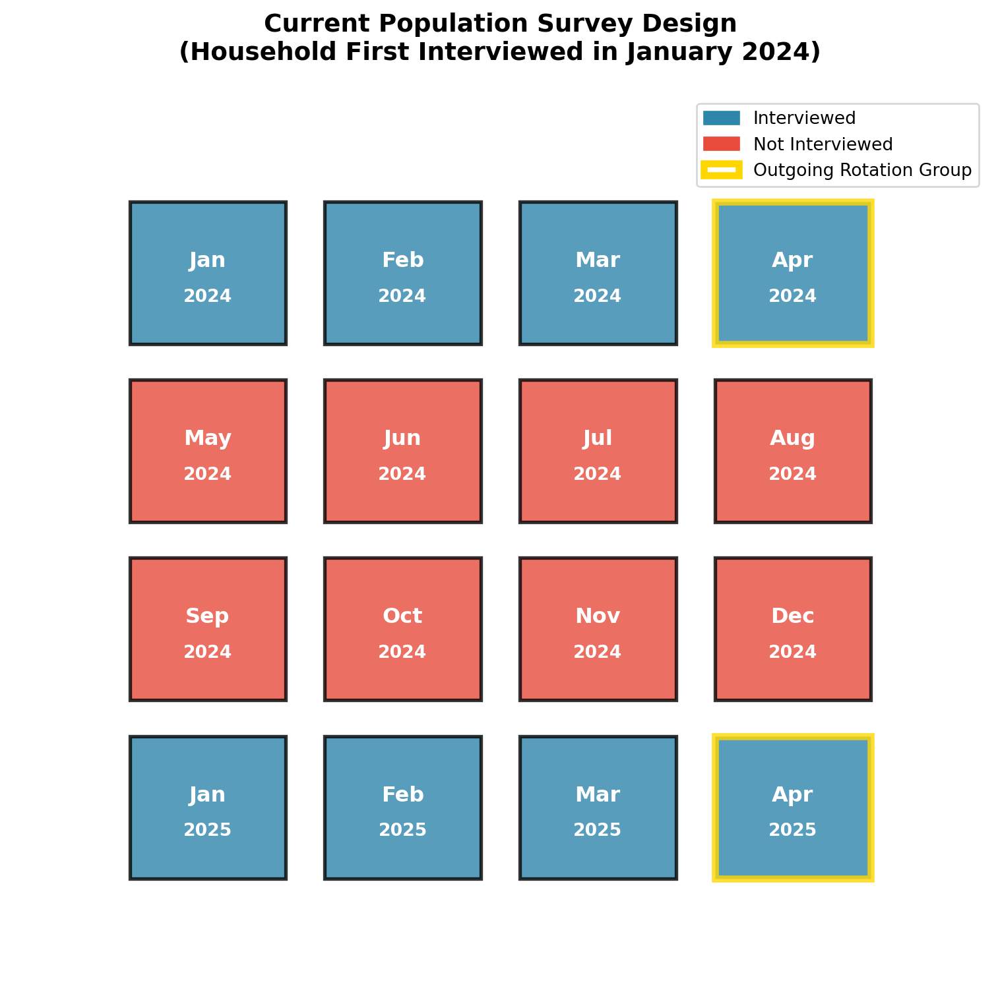
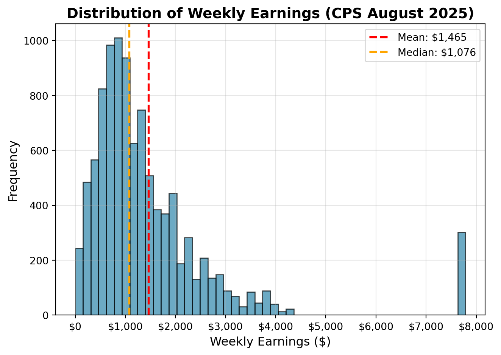

8 The Current Population Survey (CPS)
8.1 Brief Introduction
Modern labor economics started with the advent of large-scale surveys of individuals and households which began shortly after World War II. One of the most important, widely used, and to this day, influential surveys is undoubtedly the Current Population Survey (CPS).
8.2 The Current Population Survey (CPS)
The current population survey (CPS) is a monthly survey of about 60,000 households conducted by the U.S. Census Bureau and the Bureau of Labor Statistics. The CPS is the primary source of information on the labor force characteristics of the U.S. population, as well as the source for unemployment rates. To discuss the CPS, we are going to compute the unemployment rate and construct a measure of median personal income.
The CPS is what is referred to as a panel survey, implying it follows individuals over time. It has a somewhat complex design, where households are interviewed for four consecutive months, then not interviewed for the next eight months, and then interviewed again for four consecutive months. For example Figure 1 below illustrates the design for a household that was first interviewed in January 2024.
The 4th and 8th interview are referred to as outgoing rotation groups. These groups are often given extra consideration in analysis because in these interviews, respondents are asked additional questions about work and income. So if you are doing an analysis that requires an individual’s income, you may need to restrict your sample to just the outgoing rotation groups. If you are more interested in labor force status, then you don’t need to restrict your sample.
The variable MISH indicates the month-in-sample of the individual. For example, if MISH=1, then the individual is in their first month of being interviewed. If MISH=4, then the individual is in their fourth month of being interviewed and is part of an outgoing rotation group. If MISH=5, then the individual is in their fifth month of being interviewed and so on. If you want to restrict to outgoing rotation group, you need to restrict to MISH=4 or MISH=8.
8.3 Downloading the CPS
There are two main ways to access the CPS data. The first is directly through the Bureau of Labor Statistics website. The second is through the IPUMS-CPS project, which provides harmonized CPS data. This is much easier for a number of reasons. First, the IPUMS-CPS project (IPUMS stands for Integrated Public Use Microdata Series). IPUMS provides a user-friendly interface to select variables and download data. You can also select the samples you want, implying you can select information from multiple years and download it all in one file. The raw data files provided by the Bureau of Labor Statistics require much more data cleaning and processing. Second, the IPUMS-CPS project provides harmonized variables that are consistent over time, which is especially useful if you are working with data from multiple years. Lastly, the IPUMS-CPS project provides detailed documentation and support for users. For example, if you are confused about what a variable in the CPS means, you can often google the variable name and find a relevant IPUMS-CPS documentation page that explains the variable in detail. For example, when you submit an extract request, it comes with a codebook that provides detailed information about each variable, including its coding scheme.
8.4 Computing the Unemployment Rate
For our first foray into the CPS, we are going to compute the unemployment rate. We are going to do this for August 2025 data (see course website for link to the data file cps_aug_25.csv).
Let’s first load the data and take a look at the variables that are included.
| 0 | 1 | 2 | 3 |
|---|---|---|---|
| YEAR | STATEFIP | AGE | UHRSWORKT |
| SERIAL | PERNUM | SEX | WHYUNEMP |
| MONTH | WTFINL | EMPSTAT | EMPSAME |
| HWTFINL | CPSIDP | LABFORCE | EDUC |
| CPSID | CPSIDV | OCC | UNION |
| MISH | EARNWEEK2 | CLASSWKR | UHRSWORKORG |
Let’s compute the unemployment rate among these group of workers. The unemployment rate is defined as the number of unemployed individuals divided by the labor force. Remember from Chapter 1 that if you are not currently employed and not actively looking for work, then you are not part of the labor force. Before we compute the unemployment rate, let’s first see how many individuals are in the labor force. We can do this by looking at the variable LABFORCE, which indicates whether an individual is in the labor force or not.
| Labor Force Status | Description | Count | Percentage |
|---|---|---|---|
| 0 | NIU (Not in Universe) | 16167 | 16.54% |
| 1 | No, not in labor force | 32988 | 33.75% |
| 2 | Yes, in labor force | 48585 | 49.71% |
In the CPS, variables are generally coded numerically. To understand what the numbers represent, however, you need to use the codebook. This is where the labels for the numbers come from. The first thing you might notice is that a larger share of people are recorded as “Not in Universe”. This implies the labor force status is not applicable for these individuals. This can happen for two reasons, basically. First, the CPS does ask about individuals who are under 16 years old, and these individuals are not part of the labor force. For these individuals, often the parents will fill out the survey on their behalf. For our purposes, let’s restrict to individuals that are 16 years old or older. We can do this by restricting to individuals with AGE>=16. This restriction drops most of the 16,167 individuals who are “Not in Universe”, but there remain a few left. In this case, these individuals should have been asked this question, but for some reason, they were not. This can happen for a variety of reasons, such as the individual refusing to answer the question or the interviewer making a mistake. For our purposes, we are going to drop these individuals from our analysis.
| Labor Force Status | Description | Count | Percentage |
|---|---|---|---|
| 1 | No, not in labor force | 31929 | 39.72% |
| 2 | Yes, in labor force | 48448 | 60.28% |
So in our relevant sample, just above 60% are in the labor force and just below 40% are not in the labor force. This is a pretty standard estimate of this statistic. To compute the unemployment rate, we need to know how many individuals among those in the labor force are not currently employed. This information is contained in the variable EMPSTAT, which includes a more thorough breakdown that indicates whether an individual is employed, unemployed, or not in the labor force. Let’s take a look at the distribution of this variable among our remaining sample.
| Employment Status | Description | Count | Percentage |
|---|---|---|---|
| 10 | At work | 44348 | 55.17% |
| 12 | Has job, not at work last week | 2069 | 2.57% |
| 21 | Unemployed, experienced worker | 1815 | 2.26% |
| 22 | Unemployed, new worker | 216 | 0.27% |
| 32 | Not in labor force, unable to work | 3704 | 4.61% |
| 34 | Not in labor force, other | 9190 | 11.43% |
| 36 | Not in labor force, retired | 19035 | 23.68% |
The Not In Labor Force categories match what we saw before (19035+9190+3704=31929). The employed categories (10 and 12) sum to 46,417, while the unemployed categories (21 and 22) sum to 2,031. The unemployment rate is then computed as:
\[\begin{align} \text{Unemployment Rate} &= \frac{\text{Number of Unemployed}}{\text{Labor Force}} \\ &= \frac{2031}{2031 + 46417} \\ &= 4.4\% \end{align}\]
You might see a slightly different unemployment rate reported in the news or on the BLS website. This is because the BLS uses a slightly different sample and also applies weights to the data to make it representative of the U.S. population. The weights are provided in the CPS data (`WTFINL’). The basic reason behind the weights is that the CPS purposely oversamples some populations. For example, imagine you want to understand the age distribution of a University, but also wanted to understand what fraction of seniors at a University have already found a job. You may want to oversample seniors to get a better estimate of this statistic. However, if you oversample seniors, then your sample will not be representative of the overall population. If you take the average age, then it will be biased upwards because seniors are older. To correct for this, you would apply weights to the data so that seniors are weighted less and other groups are weighted more. This is the basic idea behind weights in survey data. Weights are often provided in survey data to make the sample representative of the population. For our purposes, the weights will not actually make too much of a difference and would complicate the analysis, so we will ignore them for now.
AI for Data Analysis
AI is undoubtedly an extremely useful tool for data analysis. Much of the code writtent to clean and organize data is fairly simple and has been performed thousands of times before by many different people. This makes it ideal for AI to help generate code snippets and explanations.
However, AI tools can also make mistakes. For example, when constructing the frequency tables above, the AI I used (Claude) provided suggestions for the labels of the different numeric codes in the CPS. While most were correct, a few were incorrect. If I had not cross-referenced with the official documentation, I would have classified a large number of workers that were not in the labor force as not in universe. This would lead to big issues if your goal was to study labor force participation. Additionally, the AI sometimes made simple mathematical mistakes (such as incorrectly summing up a list of numbers).
8.5 Occupation
In this course, one important focus will be on occupations. In particular, when we study how technological changes impact the labor market, our predictions will depend crucially on the types of tasks performed in different occupations. Therefore, let’s dig into the occupation variable in the CPS.
The occupation variable, by necessity, has gone through some changes over time. When the CPS was created in the 1940s, there simply weren’t occupations like “Software Developer” or “Data Scientist”. Therefore, the CPS has periodically updated the occupation codes to reflect changes in the labor market. The occupation variable in the CPS is called OCC. Since we are using the 2025 data, we are going to use the classification system that was introduced in 2018.
Let’s see what the five most common occupations are in our sample.
| Occupation Code | Occupation Title | Count | Percentage |
|---|---|---|---|
| 440 | Managers, all other | 1707 | 3.68% |
| 3255 | Registered Nurses | 1035 | 2.23% |
| 9130 | Unknown Occupation | 1003 | 2.16% |
| 2310 | Elementary and middle school teachers | 959 | 2.07% |
| 4700 | First-line supervisors of retail sales workers | 893 | 1.92% |
Depending on your analysis and what you are interested in, you may need to either aggregate data from many more time periods or group some occupations together. For the most popular occupation (Managers, all other), we have 1,707 observations in August 2025.
8.6 Earnings
Next, we are going to studying earnings. As discussed before, earnings information is primarily studied using the outgoing rotation group (i.e. MISH=4 or MISH=8). There are a few things about earnings data that are important to note.
First, because earnings information is only asked in the outgoing rotation group, many people have a numeric code that indicates that they were not asked this question. The variable we will be using in EARNWEEK2, which indicates the total earnings in the past week. If you use earlier versions of the CPS, we could have used EARNWEEK, which is similar. The only difference between these two variables is that EARNWEEK2 rounds numbers to preserve confidentiality of the respondent. This was introduced in April 2023. If you are using data from before this date, you should just use EARNWEEK.
If you go to the codebook for EARNWEEK2, you will see that there are a number of numeric codes that indicate the respondent was not asked this question. For example, the codebook reports that EARNWEEK2=999999.99, indicates that the person is not in universe for this question.
| EARNWEEK2 Value | Count | Percentage |
|---|---|---|
| 999999.99 | 70372 | 87.55% |
| All Other Values | 10005 | 12.45% |
The individuals with missing earnings information are either individuals who are not working or individuals not in the outgoing rotation group. That is why the fraction with earnings information appears relatively low. Not dropping individuals with missing earnings information from the sample would be extremely problematic. Because the missing data is stored as a numeric variable, imagine we tried to compute the average weekly earnings. If we failed to drop the missing individuals, then the average would be around 900,000 dollars per week. This is obviously not correct. So we need to drop these individuals from our sample. Then, let’s compute some summary statistics for weekly earnings.
| Statistic | Value |
|---|---|
| Mean Weekly Earnings | $1,464.58 |
| Median Weekly Earnings | $1,076.00 |
| 10th Percentile | $390.00 |
| 90th Percentile | $2,700.00 |
| Observations | 10,005 |
This table gives us a sense of the distribution of weekly earnings among workers in our sample. The median weekly earnings is $1,076.00. Assuming a 52-week year, this implies median annual earnings of about $55,952. The average is quite a bit higher at $1,464.58. This is common in earnings data, which tends to be right-skewed. When there are some really large value, this will pull the average up, while the median doesn’t depend on the magnitude of the values, just their rank.
To see this clearly, imagine we had only 5 workers with weekly earnings of $500, $500, $1000, $1,500, and $1,500. In this example, both the mean and median are $1,000. Now imagine the 5th worker sees an increase in their weekly earnings, growing all the way to $10,000. This has no impact on the median, which remains $1,000. However, the mean increases to $2,700.
To see the entire distribution of weekly earnings, let’s plot a histogram.

This distribution has a long right tail, which is typical of earnings data. The mean is pulled up by the high earners, while the median is more representative of a typical worker’s earnings. One thing you might notice is that there seems to be a spike just below $8,000 a week. It seems unlikely that so many people would have exactly that amount of eanrings. Additionally, it is surprising that there is basically no one with earnings between $5,000 and $7,000. What is going on here?
If you look carefully in the data, you will find that there are a non-negligible fraction of individuals with weekly earnings reported as exactly equal to $7,785.88. But wasn’t this supposed to be a rounded earnings variable? The reason this is not rounded is because these individuals earnings have been top-coded. For earnings above a certain amount, there are concerns that the individual would be identifiable based on their earnings. Therefore, to preserve confidentiality, the CPS top-codes earnings at a certain level. For 2025, the Census top-codes the top 3 percent of earners and sets the value of their weekly earnings to the average earnings of the top 3 percent of earners.
If you look even more closely at the data, you’ll find that the largest value that is not top-coded is $4,300. So if you make more than $4,300 a week, that implies you are in the top 3 percent of earners. Among individuals that make more than $4,300 a week, the average is $7,785.88. This is why there is a spike at this value because anyone with earnings above $4,300 is recorded as having earnings of $7,785.88.
Top-coding has changed over time. The threshold has changed, and in prior years, it was static. In other words, instead of top-coding the top 3 percent of earners, the CPS would top-code anyone making more than a certain amount.
8.7 Conclusion
The Current Population Survey is one of the most important and influential surveys in labor economics. It remains important today as the source for up-to-date unemployment numbers. However, using the CPS for research requires one to be careful. Without a thorough understanding of how variables are coded, the structure of the survey, and changes to the survey over time, it is easy to make mistakes that can lead to incorrect conclusions.